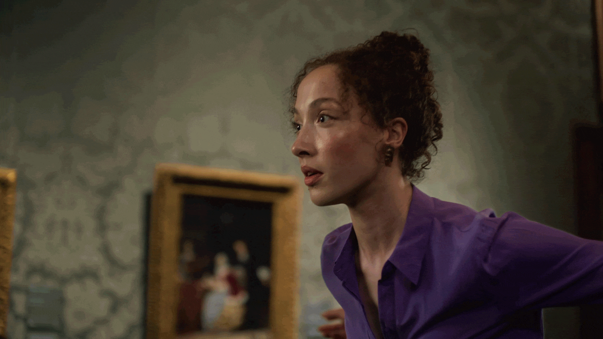
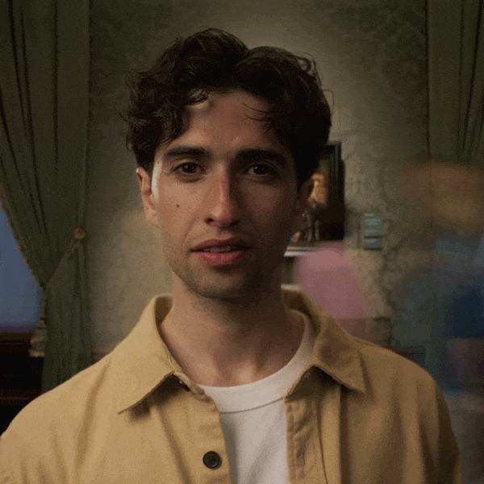
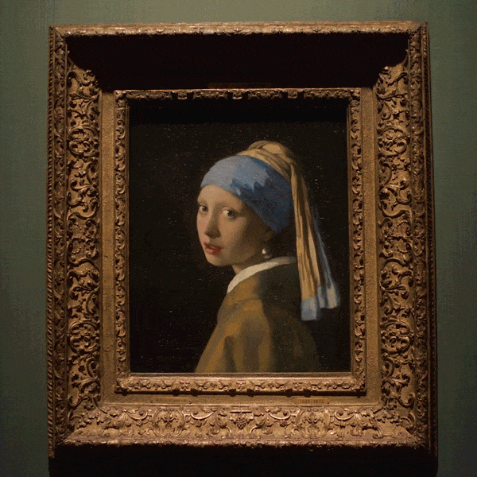

Mauritshuis — Oog in Oog
met het Meisje

Challenge
Most people know Vermeer's Girl with a Pearl Earring. Far fewer know where she lives. In 2023, that problem got worse: the Rijksmuseum staged the biggest Vermeer exhibition ever and borrowed the Girl for six weeks. Every tourist in the country was going to Amsterdam. The painting that was supposed to draw people to The Hague was temporarily doing the opposite.
Approach
Rather than compete with the Rijksmuseum's spectacle, the strategy went the other way. The Rijks could offer the Girl as part of a crowd. The Mauritshuis could offer something the Rijks never could: proper eye contact. Research shows four minutes of unbroken eye contact creates a real bond — and at the Mauritshuis, on a quiet afternoon, that's exactly what's on offer. So when the Girl came home, the campaign invited the Netherlands to come and meet her. Not as one of thousands, but face to face, in the place she belongs.


Outcome
The campaign didn't need to shout. It just needed to remind people that the most famous painting in the country had come home — and that here, unlike anywhere else, you could actually look her in the eye.